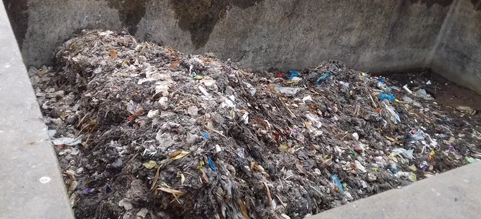

Home
Projetos
Parcerias
Sobre Nós
Cadastrar
Presidente Prudente

Um levantamento da Companhia de Saneamento Básico do Estado de São Paulo (Sabesp) aponta que são retiradas, em média, 293,5 toneladas de lixo e areia por mês dos sistemas de esgoto nas 62 cidades atendidas pela empresa através de sua Superintendência Regional com sede em Presidente Prudente (SP)
O estudo considera os sete primeiros meses (janeiro a julho) de 2021 e aponta que cada imóvel conectado à rede de esgoto na região descarta, por mês, 750 gramas de resíduos que não deveriam ser lançados no sistema de esgoto.
Segundo a companhia, o material descartado, além de causar obstrução e rompimento das redes coletoras, provoca transtornos aos próprios clientes, como o retorno do esgoto para dentro dos imóveis.
Em média, a Sabesp realiza 600 desobstruções de rede e ramais de esgoto por mês nas cidades pesquisadas. Outro grande prejuízo ambiental causado pela prática é que, após o contato com o esgoto, materiais como papéis, plásticos e vidros já não podem mais ser reciclados.
Entre os detritos encontrados nas redes coletoras e nas estações elevatórias e de tratamento de esgoto estão peças de roupas, fraldas descartáveis, escovas, pastas de dentes e embalagens plásticas em geral. Todos estes materiais deveriam ser destinados às lixeiras e não a pias, ralos e vasos sanitário. Já o óleo de cozinha deve ser armazenado em garrafas plásticas e entregue em pontos de coleta para reciclagem, conforme a Sabesp..